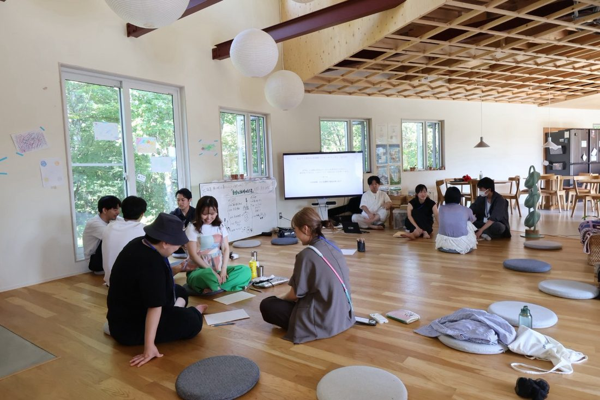
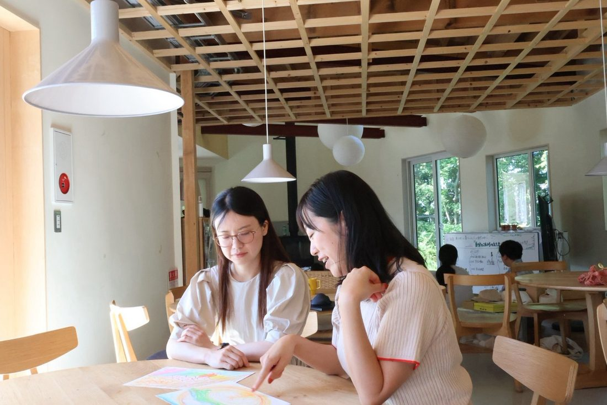
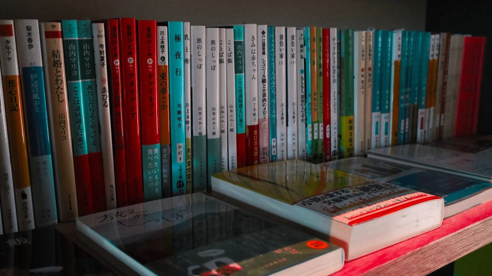
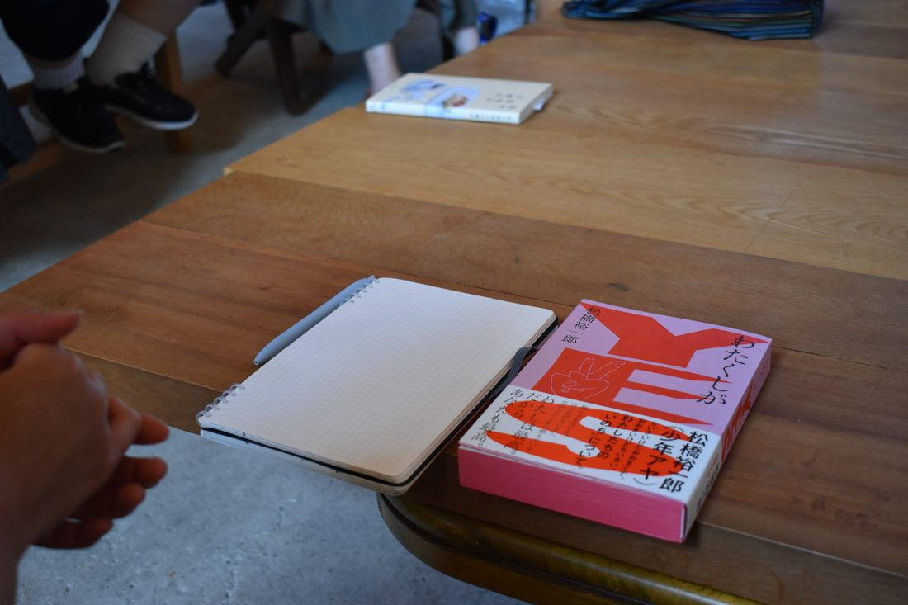
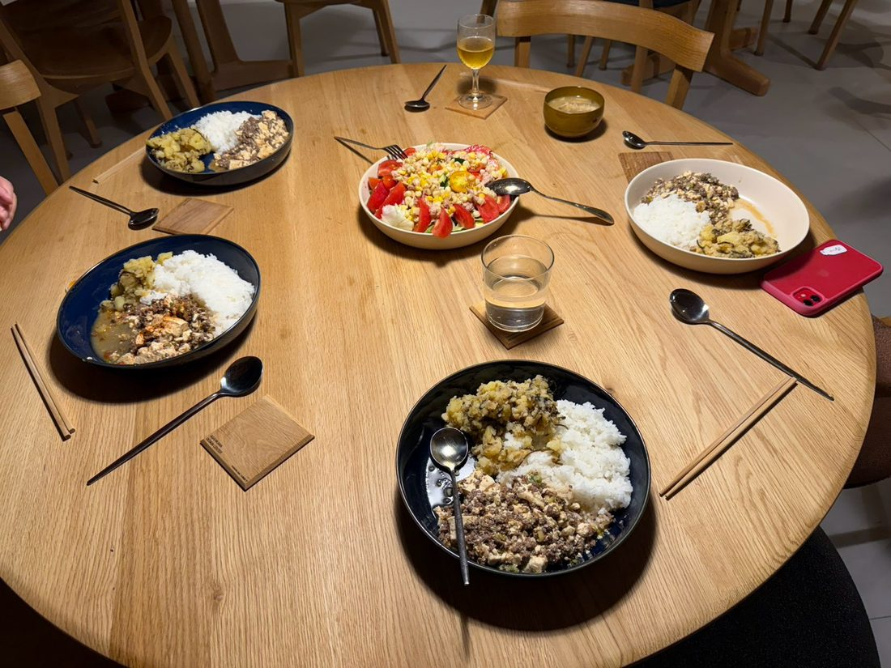
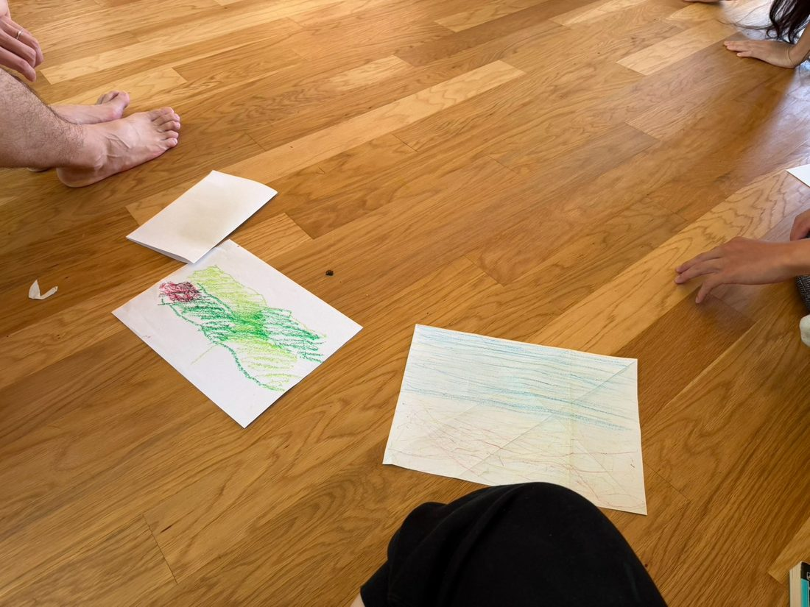
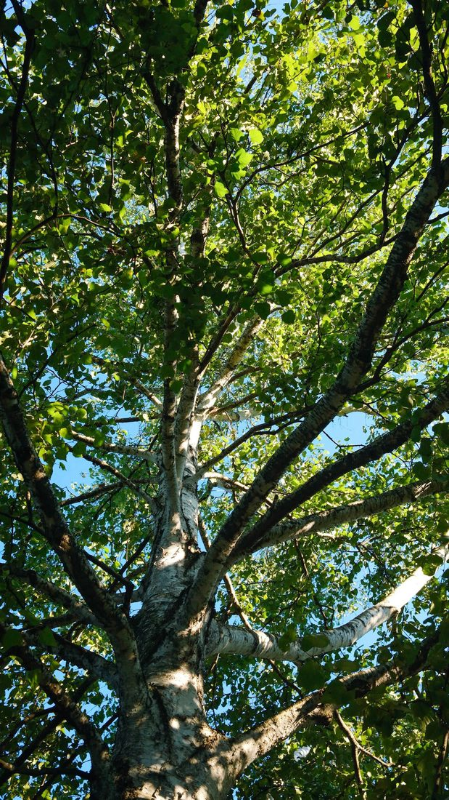
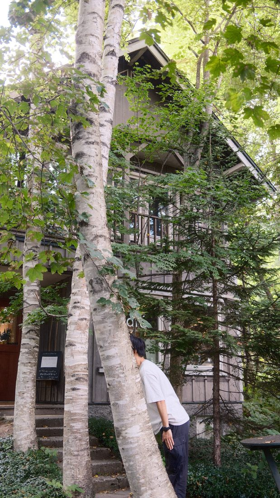
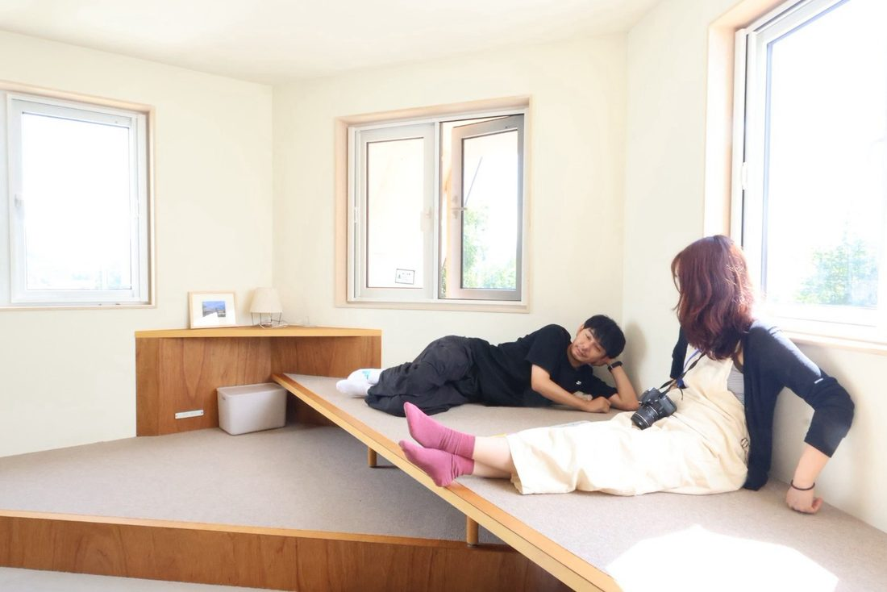
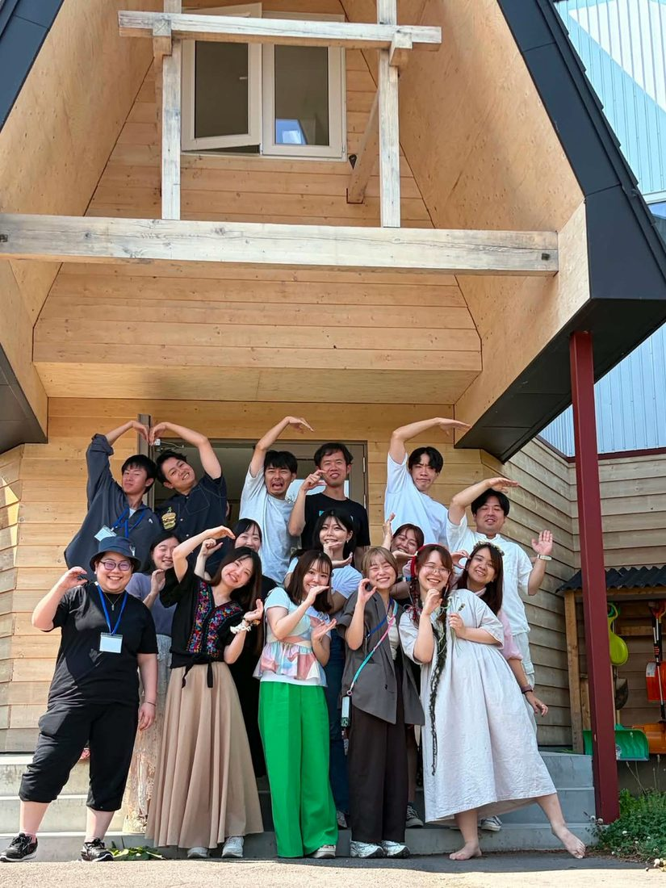

2026年12月4日から6日、北海道・東川町。雪が音を吸って、日がはやく落ちる季節に、フォルケホイスコーレの学び舎で2泊3日を過ごします。8月に満席で開催した回に続く、POOLO × School for Life Compath の冬回です。

町と雪に身体を慣らす1日。夜は皆で台所に立ち、明日からの土台を頭ではなく身体でつくります。
この町に暮らす人の話を、ゆっくり聴く日。それぞれの選び方が、あなたの選択肢をひらいていきます。
3日間で揺らいだものを、自分の言葉で綴じる時間。書く時間と話す時間を経て、また日常へ。
今年もそれなりにやってきた。うまくいったこともある。それでも、12月になると、ふと立ち止まる瞬間があります。
この一年、たしかに前には進んだ。でも、行きたかった方向だっただろうか。
来年の目標を立てようとすると、去年と同じことを書いてしまう。
忙しさが落ち着いたら考えよう、と思っているうちに一年が終わっていく。
誰かに話すほどのことでもない。でも、ひとりで考えると同じところをぐるぐるする。
この3日間は、その「ぐるぐる」を、誰かと一緒にほどきにいく時間です。

School for Life Compath がモデルにしているフォルケホイスコーレは、デンマークで生まれた、試験も成績もない全寮制の学校です。もともとは、外の仕事が止まる長い冬に、若い人たちが集まって半年を過ごす学校として広まりました。
冬こそが、本来の季節です。
外が静かになると、人は内側を向きます。日が短く、雪が音を吸い、遠くへ出かける理由がなくなる。だから、話す。だから、聴く。だから、書く。北欧の冬に生まれた学びのかたちは、そういう季節の力を前提にしています。
8月の回では、森を歩き、畑の恵みを食べ、明るい時間がずっと続きました。それはそれで、とてもよかった。ただ、夏には見えなかったものが、冬には見えるということが、きっとあります。同じ町、同じ校舎、同じ3日間。季節だけを変えて、もう一度。
北海道のほぼ中央、大雪山国立公園の麓にある町、東川町。人口およそ8,400人。上水道がなく、すべての家庭が地下水で暮らしています。
写真の町を名乗り、家具をつくり、移住者と元からの住民がゆるやかに混ざり合う。「東川スタイル」と呼ばれる作法が、町の風景の中に静かに息づいている町です。
Compath が、この町を選びました。
日本でフォルケホイスコーレを始めるなら、ここしかない。そう一目惚れした町だと、Compath の二人は言います。3日間、あなたはこの町の一員のように過ごします。誰かのストーリーを聞き、自分のストーリーを話し、また聞く。その往復のなかで、これからの生き方の輪郭を、問い直し、描き直していきませんか。










＊写真はすべて2026年8月21〜23日に開催した第1回の記録です。12月は雪の東川になります。
無理に何かを掴もうとしないリズムで、3日間がゆっくり進みます。
冬回の詳細プログラムは現在 Compath と調整中です。確定次第、このページを更新します。
旭川空港、もしくは東川町せんとぴゅあに集合。Compathがこの町に一目惚れした話から、ゆっくりはじめます。［集合場所・時刻は調整中］
肩書きを脇に置いて、手を動かしながら自分を表現する時間。お互いの近況に、ゆっくり耳を傾けます。［冬版の内容は調整中］
東川ならではの食材を一緒に料理し、町の人たちと食卓を囲みます。移住の理由や暮らしの手触りを、ゆっくり聴く時間です。
ジャーナリング（書きながら自分に問う時間）と、NVC（互いの願いを聴き合う対話法）を使って、1日を振り返ります。
手で作って、五感をひらく制作の時間。上手い下手を評価せず、対話型鑑賞で互いを深く知ります。
この町で自分の仕事と暮らしを編んでいる人に、じっくり話を聴きます。［冬回のゲストは調整中］
カフェや木工工房、文化施設をめぐったり、雪の道を歩いたり。自分のペースで町と過ごす時間です。
余白時間に出会ったお土産と、その日の話を持ち寄って、夕食を囲みます。
日が落ちるのがはやい季節だからこそできる、夜の時間を考えています。［内容は調整中］
3日間のラップアップ。ゆっくりジャーナリングを重ねながら、感じたこと、起こしたい一歩を仲間と話します。
町を出る前に、ランチを共にできる時間を取る予定です。［解散時刻・推奨フライトは調整中］

正解を教わるのではありません。この町を選び、自分の仕事と暮らしを編んでいる人から、直接、話を聴きます。生き方の選択肢が、ひとつ増えます。
雪の道を歩く。台所に立つ。手を動かして何かをつくる。考えるための土台を、言葉より先に身体でつくっていきます。
ジャーナリング、対話型鑑賞、NVC。Compath が積み重ねてきた「問いを深める作法」を、3日間を通して実際に使います。
予定は詰め込みません。町をひとりで歩く時間、書く時間、ぼーっとする時間。人と話す時間と同じくらい、大切なプログラムです。

















＊写真はすべて2026年8月21〜23日に開催した第1回の記録です。
冬回のゲストは、現在 Compath と調整中です。決まり次第このページでご紹介します。
ご参考までに、8月の回では本屋の店主とネイチャーガイドのお二人に話を伺いました。
ゲスト①
この町で自分の仕事と暮らしを編んでいる方に、じっくり話を聴く時間を予定しています。
ゲスト②
冬の東川ならではの時間を過ごせる方をお招きする予定です。

この3日間で「やりたいことが見つかる」とも「進む道が決まる」とも、お約束はしません。目指しているのは、もう少し手前の変化です。
答えを持ち帰るのではなく、問いのまま持ち帰る。急がずに、その問いと一緒に年を越す。そこまでを、この3日間のゴールにしています。
あたらしい旅の学校 POOLOは、旅を入り口に、自分の生き方・働き方を問い直す大人の学び場です。2019年に開校し、世界中を旅する20〜30代が全国から集まり、いまは1,200名以上が関わるコミュニティになりました。POOLOには問いを持って、世界や人生に向き合うという文化があります。
School for Life Compathは、北海道・東川町を舞台に、立ち止まって余白を取り、自分と社会について問い直す、人生の学び舎づくりをしています。コンセプトは「私のちいさな問いから社会が変わる」。デンマークのフォルケホイスコーレを下敷きに、個人・法人・地域の人へ、問いを探究する場を提供しています。
この二つは、大学の同じゼミの出身です。10年以上の時を経て、2026年8月に初めて共同で3日間を開催し、定員15名が満席になりました。今回はその第2回を、季節を変えて冬に行います。
だから、答えを教えるプログラムにはしません。3日間を終えたとき「答えはまだないけれど、考えたい問いがはっきりした」と思えること。それを目指しています。


＊参加費・定員・締切は調整中です。決まり次第、グループでお知らせします。

Q.8月の回に参加していなくても大丈夫ですか？
はい。8月の回とは独立した3日間です。初めての方も、8月に参加した方も、どちらも歓迎しています。
Q.一人で参加しても大丈夫ですか？
はい。ほとんどの方がおひとりでの参加です。初日から、参加者同士でゆっくり話す時間を丁寧に置いています。
Q.どのくらい寒いですか。何を持っていけばいいですか？
12月上旬の東川は雪が積もり、日中も氷点下になる日があります。持ち物リスト（防寒着・靴・移動時の注意など）は、募集開始のタイミングで詳しくご案内します。［要確認：Compathと調整のうえ確定］
Q.雪道の運転や移動が不安です。
ご自身での雪道運転は前提にしていません。空港からの移動は送迎を予定しています。［要確認：冬の送迎体制］
Q.現地までの交通費は含まれますか？
8月の回では、東川町までの旅費・交通費は各自のご負担でした。冬回も同様の想定ですが、参加費に含まれる範囲は調整中です。
Q.参加費はいくらですか。いつ決まりますか？
現在調整中です。決まり次第、このページと LINEグループでお知らせします。参考までに、8月の回は59,800円（税込・2泊3日・食事とプログラム費込み）でした。
Q.このページの写真は、冬のものですか？
いいえ。掲載している写真はすべて、2026年8月21〜23日に開催した第1回の記録です。12月は雪の東川になります。冬の写真は、準備でき次第このページに追加します。
Q.途中参加・途中離脱はできますか？
3日間をひとつのプログラムとして設計しているため、全日程のご参加を前提としています。
豊かさは、自分の内側と、誰かとのあいだの、ちょうど真ん中にある。その真ん中を、雪の東川の3日間で、すこしだけ確かめにいきませんか。
＊参加費・定員・締切は調整中です